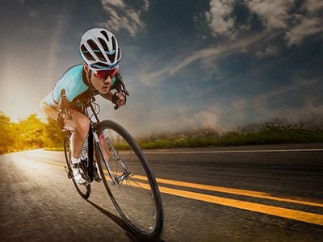
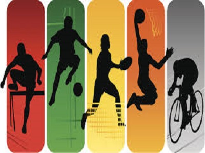

| Habilidad |
¿Por que? |
Imagen |
| Habilidad para las matematicas |
Siempre he sido bueno para las matematicas, y siempre me han gustado |
 |
| Ciclismo |
Desde niño practico en la bici, por lo que hoy en día tengo bastante experiencia |
 |
| Guitarra |
La guitarra es de mis principales habilidades, aunque ultimamente ya no he practicado |
|
| Videojuegos |
A los videojuegos es a lo que mas le he dedicado tiempo durante gran parte de mi vida, por lo tanto, soy bastante habil |
|
| Deporte |
Desde pequeño siempre he tenido predisposición para los deportes, siendo bueno en casi todos los que practico |
 |